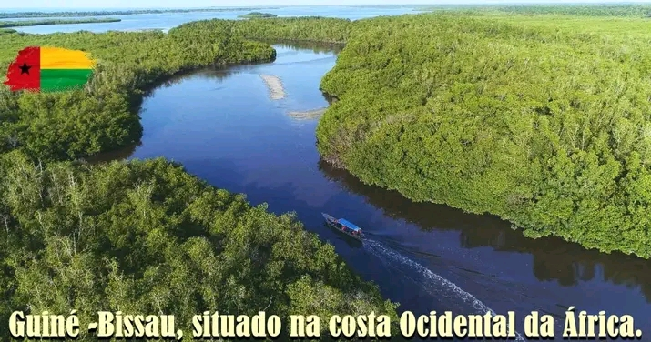
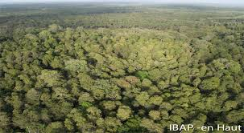
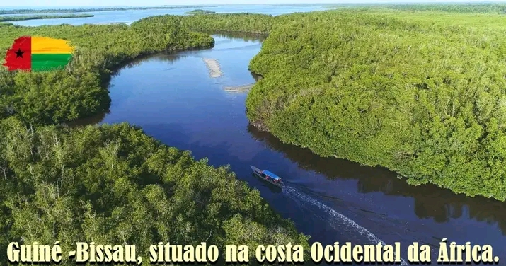
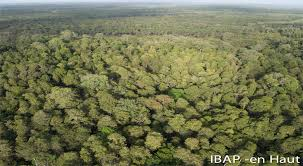

Flora

A flora da Guiné-Bissau é caracterizada por uma grande variedade de espécies vegetais, adaptadas as diferentes condições climaticas e ecológicos do país. As princípais formatações vegetais incluem florestas tropicais húmidas, savanas arborizadas, matas de galeria e extensas áreas de mangal. .
 


